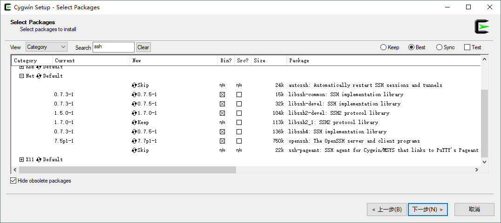

Basic Linux Skills for Remote Controlling
| Date: | May 26, 2018 |
|---|---|
| Last Updated: | Jun 14, 2018 |
| Categories: | |
| Tags: |

Contents
Instruction
Here we provides some basic instructions for how to access to the remote Linux server. We assume that the reader who learn this instruction could grant such conditions:
- Use a client device equipped with Windows;
- Has the full authority on both the client and the server;
- The client and the server is in the same domain.
To perform a test of whether it is ok for network equipments, type this command in Windows CMD:
ping xx.xx.xx.xx -t
If the network access is OK, you would see the left result, otherwise the result is like the right one.
| Success to access | Network fail |
|---|---|
After confirming that the network works well, we could begin to get access to the remote server.
Access
We have two methods to get access to the remote server. The first one is using CygWin to simulate a Linux environment, which means we could use the same method on a Linux client. However, CygWin is a huge application which may take much space. The second method is more suitable for Windows user, we only need to download Putty and Xming both of which are small.
We recommend to use WinSCP to exchange data, although you could use scp command on Linux environment. It is easy to use WinSCP because the GUI is similar to explorer on Windows.
CygWin Approach
Install
Check here to download the CygWin installer:
You could also find some instructions about installing CygWin here. But for getting access to the server, we need to pay attention to some options during the installation:
| Package Name | Instruction |
|---|---|
| CygWin-SSH |  It is important to install SSH so that you could get access successfully. |
| CygWin-SSL | SSL could be used to grant the security of the connection. |
| CygWin-X11 | Last but most important, we need to install the whole X11 category to enable our terminal show the remote GUI. |
It may take a little bit long for you to install CygWin.
Setting
After installation, you need to modify the .bashrc file in the user root folder where CygWin installed. For example, my folder address is: C:\cygwin64\home\username. Then you would be able to see .bashrc file. We could open it and add these lines to the bottom of the file:
export DISPLAY=:0.0
startxwin &
These commands would be run automatically every time you open the CygWin shell. Note that because it would create the sub-thread to run the Xming initializer, when we close the shell we need to close this thread mannually (in the system tray).
After that, open the CygWin Shell. Wait for the Xming initialized. Then you could type
$ xterm &
If it success, you could see the result like below:
| Success to open X termination |
|---|
Get Accessed
Now we could use the X termination to get access to the server.
First, type this command:
$ ssh -Y username@xx.xx.xx.xx
If you connect the server for the first time, you may see a question about whether to accept the fingerprint, type yes as the response. Then it requires you to type the password. Do it as you know. Although you could not see any response on the screen, if you type, it takes effect actually. After that you could get access to the remote server successfully. The name of the device would change to the name of the server.
Try to run an application as you know, you could see that the GUI works well.
| Use remote GUI |
|---|
Putty with Xming
Install
Check here to download and install Putty. This application is lightweight and portable. You do not need to download the install package.
Here is the official site of Xming. You could download the binary package and install it. And here is also an instruction about how to link Xming with portable Putty, although we would discuss about this topic later. Note that downloading the website version (latest) of Xming needs donation. We need to choose public domain version.
Setting
Note that before we run Putty, we need to run XLaunch (After the first time, you could use Xming rather than XLaunch). Choose all default options, and you could see X11 on your system tray. Then we run Putty. As shown in the following screenshots, you need to fill the IP address of your server and give a name in the main page. Click Save then you could save the options. Then we need to enter the SSH/X11 option, enable the X11 forwarding and set the display location as :0.0. After that, do not click Open button because you need to get back to the main page and save the options again. Then you could click Open and run the Putty terminal.
| Putty Configuration (Base) | Putty Configuration (X11) |
|---|---|
Get Accessed
When you run the terminal firstly, you may receive the warning about ssh fingerprints like the left screenshot. Just confirm yes and let it continue. Then you would be required to fill your user name and password on remote server. When you typing password, there would be no response shown on the screen, but your typing takes effect. If you get verified, you could log in successfully.
| SSH Warning | Use remote GUI |
|---|---|
 |
The right screenshot show an example of using GUI (firefox). Make sure your X11 client running on your system tray, otherwise you could not open the GUI applications.
Exchange Data
Compared to scp command, we recommend you to use WinSCP application. You could download it here:
This application is also lightweight. After the installation, you could open it and create a server shortcut on your desktop. The configuration is like this:
| Configure WinSCP |
|---|
After logging in, you could exchange your data by dragging them on both sides of the window. The data transfer is realized by SCP protocol.
Useful Commands
Here we show some useful commands when using Linux shell (Bash). By reading this part you would know how to work with software, install new packages and make some checking.
Basic Commands
This part gives you an imagination about how to make basic operations. If you have not used Bash before, this part would be useful.
See help: You could add
--helpto almost all command and see the help description. By using this option you could learn more specific options for various usages of those applications.Make a new directory: For example, if we want to create a folder named
new folder, we could type:$ mkdir "new folder"See current path: Typing this command you would see your current path. If you use
-Poption, you would see the real path instead of shotcut version.$ pwdSee all avaliable files: Use
lsto see all files and directories in the current path. If you use-loption (as below), you would see the detail information of each items. Use-aoption you may see some ignored items.$ ls -lNote that either an abosolute path or a relative path is acceptable. For example, if we want to see items in
home/Downloads, we could use~to replace thehomeand type:$ ls ~/DownloadsAnd do not use
\to replace/on Linux.The
homefolder, i.e. the~path is not the root folder actually. To get access to the root folder of the computer, use/as the beginning. For example, we want to see theusrfolder in the root folder, type$ ls /usr -alIn this example we use a multiplied option with
-aand-l.Change the current path: Like what we do on Windows, use
cdcommand to do that.Delete files and directories: Use
rmto delete files, it supports the asterisk wildcard. For example, if we want to delete all files with a name begin withrss,$ rm rss*If we want to delete a folder, we should use
rmdirorrm -rrather thanrm. For example, we use this command to deletenew foldercreated before:$ rmdir "new folder"Note that here is also a command like this:
$ rm -rf xxxThis means delete
xxxrecursively. It would delete all directories and files inxxxwithout any confirmation. So this command is dangerous. Make sure you would not delete any file by mistake before calling it.Move files: Use
mvto move files. For example, we want to movea.txtandb.shtohome/folder/xxx,$ mv a.txt b.sh ~/folder/xxxWe could move multiple files here.
Duplicate files: Use
cpto get a copy of a file. The basic usage is likemv, and we could copy a folder like this:$ cp folderA folderB -rfSee command history: Use
historyto see which commands we used before.Track a file: Use
tailto see the last few lines of a large file. This command is useful when we need to tracking some log files which are growing when we check them. For example, ifa.logis growing with one line per second, we could use$ tail a.log -fto follow it. When we do not want to see the results, use
CTRL+Cto terminate this process.Creating a thread: Use
&after any command or application, you could open / run it in a sub-thread. For example,$ gedit & a.txtwould call an editor without blocking the Bash.
Search keywords from results: Use a postfix
| grep keyafter any command, you could search for some specific results. For example, if you want to search*.txtinhome, you could use$ ls ~ -al | grep .txtIf you want to see any historical commands about
ssh, you could type:$ history | grep sshSee any enviromental variable: For example, if we want to see the enviromental variable named
PATH, we could use this command to see the result:$ echo $PATHSee network information: Use
ifconfigto do that. You could check the IP address of this computer by this command. Certainly, you could also usepinglike what we do on Windows to check the connection with an IP address.Change the authority of files: Use
chmodto change the authority. We use 3 digits to represent the authority stage. The meanings of each stage are as below:# Permission rwx 7 read, write and execute rwx 6 read and write rw- 5 read and execute r-x 4 read only r– 3 write and execute -wx 2 write only -w- 1 execute only –x 0 none — And the three digits represents the authority of owner, the group, and other users respectively. Thus, for example, if we want to let all users have the full authority of a file named
x.txt, we could use:$ sudo chmod 777 x.txtChange my password: Type
passwd, and you could change your password. It requires you to enter the current password, new password and retyped new password.Check the processes: Type
psto see the running processes, to see the details, we recommend to use$ ps aux | lessAnd you would see all processes run by all users. If you want to search for a keyword to check whether the relevant processes are running, we could use
$ ps aux | less | grep keyKill a process: Type
killand we could kill a running process. The basic usage is$ kill -9 PIDWe use
-9option to force the process to be killed. Note that if we need to kill a specific process, we need to know its PID which could be referred by usingpscommand. If you want to kill a process that is owned by other users, just addsudobefore the command.
Installation and Upgrade
Install Anaconda3
Sometimes some applications would provide us with package for downloading. For example, you could download Linux Anaconda3 here:
In this example, we could have a Anaconda.sh file. Use this command on Bash
$ ./Anaconda.sh
and follow the instructions, we could install it successfully and add the environmental path automatically.
Install Matlab
First, you need to sign in MathWorks. And you could enter your account profile to see the avaliable license for you to download matlab. You could also use the following link to download it after logging in.
Since generally matlab only offers one license to one user, we should not install it in system space. After downloading and extracting the installation package, make sure that you do not use sudo mode to run the installation. The command should be like this:
$ ./install
Then you would be required to follow the instructions of the installation guides. Be careful that you should not install it in system space, i.e. /usr/local/MATLAB/R2018a. You should change it as /home/username/MATLAB/R2018a. And you should not create the shortcut in /usr/local/bin either.
Because we do not create the shortcut, if we type matlab in Bash we would get the error that this command does not exist. To fix this problem, we need to modify our user enviroment variables mannually. Type
$ cd ~
$ gedit .bashrc &
Then add such lines to the bottom of the file:
PATH=$PATH:~/MATLAB/R2018a/bin
export PATH
Save the file and close the editor. Then run this code:
$ . .bashrc
And your new environmental variables would take effect. Now you could use this command to open matlab:
$ matlab &
Install public packages
However, here we want to introduce another method for managing packages. This method is used more on Linux. It is apt command series.
Check whether an app is installed: For example, if we want to check whether gvim has been installed, we could use
$ which gvimList all installed apps: Use this command to do that,
$ apt list --installedOr use
$ dpkg -lUpdating the avaliable app list: Before we get a new app, we need to update the available app list. Use this command to do that,
$ sudo apt-get updatesudomeans we need to give the administrator’s authority to do that. This is also required when we installing packages.condaorpipdo not need it because these operations are in the user domain.Search whether an app could be installed: For example, we could use this command to check where we could install an application. This command is important because it could return the name of the repository. For exmaple, we want to check where we could install
gvim,$ apt-cache search gvimDownload and install an app: For example, we want to install
gvimwhich locates invim-gnomerepository. Then we use$ sudo apt-get install vim-gnomeRemove an app: For example, if we want to remove
gvimwhich locates invim-gnomerepository. Then we use$ sudo apt-get remove vim-gnomeUpgrade an app: For example, if we want to upgrade
gvimwhich locates invim-gnomerepository to the newest version. Then we use$ sudo apt-get upgrade vim-gnome
Work
Working with matlab is easy, because matlab has a full GUI. You could use matlab & to open a new thread.
If you have installed Anaconda3, you could use these commands to make some operations:
Upgrade anaconda itself: Use this command to upgrade conda.
$ conda update condaUpgrade all packages: Use this command to update to the newest version of the anaconda:
$ conda update --allUpgrade pip: Use this command to update the pip tool:
$ python -m pip install --upgrade pipInstall a new package via conda: For example, we could use such command to install opencv from
conda-forgerepository.$ conda install -c conda-forge opencventer a conda environment: For example, if we need to enter an environment named
py35, use$ source activate py35If we want to enter the base environment, use
$ source activate baseexit from the conda environment: Use this command to exit from the current environment:
$ source deactivate
Others
Please check this page to see how to use docker.